1:20.953
Debrief
This is the run of the session, and the reason is measurable: 26.18 / 26.83 / 27.93, and zero seconds below 20 km/h in any of the three laps. Not "a bit less slow time" — the 0–20 km/h band is simply absent from all three laps. Zero stalls. Zero seconds under 10 km/h. Three skidded corners out of 33, against 18 out of 41 in the 13:25 attempt.
That is the standing drill, executed. And the rest of the day is the control group. Across the twelve Bardwells Yard laps you flew today, the four laps with no time under 20 km/h are the four fastest laps of the day on this track. Every lap that dipped below 20 got slower, and got slower in the same order every time: speed goes, yaw-only time climbs (up to 30–32% on the bad laps, 9–12% here), stalls appear, lap time follows. The lap-to-lap decay that has been an open question is not stamina. It is one dip under 20 km/h and the lap unravelling from there.
Also: the "throttle sets the magnitude" thing is done. 23 of 33 corners gained throttle, 18 of 33 exited faster than they entered, and you are not being told about it again.
The one thing to fix: you can hold the floor on a track you know, and you drop it on a track you don't. The 15:03 Nineteenth Hole run has 42.5 s under 20 km/h in a single lap. You raced a brand-new circuit cold instead of learning it first.
Drill: on any new track, three laps with the clock ignored and one rule — never below 20 km/h, wide exits are free. Only then save a race. Learn the line at speed, not at walking pace.
Data analysis
• 0.0 s below 10 km/h across 80.9 s of flying, 0% of the run.
• Throttle was added in 23 of 33 corners, and 18 of 33 exited faster than they entered.
• 3 corners skidded (over 30 deg of sideslip).
• Best lap here was 0:26.184, against a personal best of 0:22.350 on the same geometry (+3.8 s).
Lap times
Circuit path
Lap 1

Lap 2

Lap 3

Laps overlaid

Where the laps separate is a LINE difference. No change of stick technique moves a line - only knowing the track does.
Flight playback
The dashed ray is where the quad is going. The arrow is where it is pointing. When they separate, that gap is sideslip: the quad is travelling sideways and the camera is not saying so. The follow cam is the same flight magnified, because at whole-lap scale the gap is a few pixels wide.
Lap 1

Lap 2

Lap 3

Numbers
| Segment | s | spd med | spd p90 | spd max | tilt med | slip med | slip p90 | thr med | under 10 km/h |
|---|---|---|---|---|---|---|---|---|---|
| lap 1 | 26.2 | 52 | 68 | 82 | 40 | 15.4 | 32.8 | 0.67 | 0.0 |
| lap 2 | 26.8 | 52 | 72 | 87 | 47 | 18.0 | 47.6 | 0.68 | 0.0 |
| lap 3 | 27.9 | 48 | 64 | 75 | 38 | 12.0 | 23.4 | 0.67 | 0.0 |
Yaw without roll. A turn flown on yaw alone is a pirouette: the airframe rotates, the path does not bend.
| Segment | yaw held (s) | roll at zero (s) | share | mean km/h | p90 by speed band |
|---|---|---|---|---|---|
| lap 1 | 7.6 | 0.9 | 12% | 63.5 | 20-35: roll 0.66, yaw 0.31 / 35-max: roll 0.62, yaw 0.43 |
| lap 2 | 8.4 | 0.8 | 10% | 50.2 | 20-35: roll 0.33, yaw 0.70 / 35-max: roll 0.61, yaw 0.43 |
| lap 3 | 9.2 | 0.8 | 9% | 52.1 | 20-35: roll 0.53, yaw 0.28 / 35-max: roll 0.49, yaw 0.33 |

Tilt and stick traces
Corners (33)

| Segment | # | t | entry | min | exit | tilt | slip | radius m | thr in | d thr |
|---|---|---|---|---|---|---|---|---|---|---|
| lap 1 | 1 | 2.5 | 62 | 57 | 57 | 48 | 6.2 | 21.1 | 0.66 | +0.06 |
| lap 1 | 2 | 3.4 | 50 | 49 | 73 | 82 | 23.4 | 12.0 | 0.60 | +0.29 |
| lap 1 | 3 | 4.3 | 79 | 46 | 46 | 57 | 21.3 | 16.1 | 0.96 | -0.11 |
| lap 1 | 4 | 9.0 | 49 | 35 | 35 | 35 | 40.5 | 18.0 | 0.59 | -0.02 |
| lap 1 | 5 | 10.4 | 31 | 25 | 33 | 55 | 26.5 | 5.5 | 0.50 | +0.14 |
| lap 1 | 6 | 11.5 | 43 | 43 | 53 | 47 | 7.8 | 17.4 | 0.82 | -0.08 |
| lap 1 | 7 | 14.6 | 42 | 33 | 35 | 48 | 16.2 | 12.8 | 0.58 | +0.01 |
| lap 1 | 8 | 17.5 | 45 | 45 | 52 | 48 | 8.7 | 20.4 | 0.90 | -0.14 |
| lap 1 | 9 | 20.2 | 71 | 50 | 50 | 45 | 16.2 | 27.9 | 1.00 | -0.27 |
| lap 1 | 10 | 24.6 | 59 | 59 | 82 | 65 | 26.4 | 22.6 | 0.69 | +0.11 |
| lap 2 | 1 | 1.7 | 60 | 48 | 48 | 30 | 16.4 | 22.5 | 0.70 | -0.00 |
| lap 2 | 2 | 2.6 | 44 | 43 | 53 | 47 | 9.8 | 15.2 | 0.53 | +0.17 |
| lap 2 | 3 | 5.7 | 44 | 44 | 47 | 53 | 15.2 | 15.3 | 0.44 | +0.18 |
| lap 2 | 4 | 7.6 | 75 | 75 | 78 | 52 | 6.9 | 37.1 | 0.92 | -0.03 |
| lap 2 | 5 | 8.8 | 64 | 34 | 37 | 62 | 31.1 | 11.5 | 0.60 | +0.14 |
| lap 2 | 6 | 10.6 | 51 | 51 | 55 | 44 | 14.2 | 17.1 | 0.90 | -0.09 |
| lap 2 | 7 | 11.5 | 45 | 45 | 50 | 57 | 9.4 | 21.1 | 0.47 | +0.16 |
| lap 2 | 8 | 13.0 | 49 | 33 | 49 | 49 | 28.1 | 12.9 | 0.57 | +0.10 |
| lap 2 | 9 | 16.1 | 60 | 55 | 60 | 36 | 7.7 | 20.2 | 0.85 | +0.03 |
| lap 2 | 10 | 17.3 | 47 | 45 | 56 | 76 | 12.6 | 12.7 | 0.36 | +0.39 |
| lap 2 | 11 | 19.8 | 57 | 48 | 49 | 49 | 16.6 | 15.2 | 0.70 | +0.03 |
| lap 2 | 12 | 21.7 | 47 | 47 | 56 | 53 | 12.5 | 12.8 | 0.52 | +0.28 |
| lap 2 | 13 | 24.2 | 38 | 28 | 50 | 48 | 32.1 | 7.4 | 0.55 | +0.24 |
| lap 3 | 1 | 2.4 | 62 | 43 | 43 | 52 | 12.5 | 15.9 | 0.71 | -0.01 |
| lap 3 | 2 | 6.3 | 45 | 45 | 50 | 34 | 3.8 | 17.8 | 0.57 | +0.19 |
| lap 3 | 3 | 8.8 | 45 | 20 | 21 | 42 | 19.5 | 14.9 | 0.62 | +0.05 |
| lap 3 | 4 | 13.1 | 25 | 23 | 24 | 31 | 13.3 | 6.5 | 0.37 | +0.22 |
| lap 3 | 5 | 17.1 | 38 | 38 | 43 | 40 | 20.3 | 12.4 | 0.58 | +0.14 |
| lap 3 | 6 | 19.9 | 48 | 48 | 54 | 45 | 17.1 | 16.5 | 0.79 | -0.00 |
| lap 3 | 7 | 21.5 | 47 | 47 | 60 | 66 | 4.4 | 17.5 | 0.41 | +0.31 |
| lap 3 | 8 | 23.5 | 64 | 60 | 60 | 38 | 20.1 | 25.9 | 0.72 | +0.07 |
| lap 3 | 9 | 24.3 | 58 | 57 | 57 | 48 | 6.6 | 28.1 | 0.58 | +0.10 |
| lap 3 | 10 | 26.5 | 62 | 62 | 75 | 56 | 8.6 | 25.4 | 0.76 | +0.12 |
Replay 20260828-140705_BardwellsYard_Race_3lap.xml · samples in flight.csv · full analysis, including everything not drawn above, in analysis.json · generated 2026-08-28 17:51 by fpv_report.py